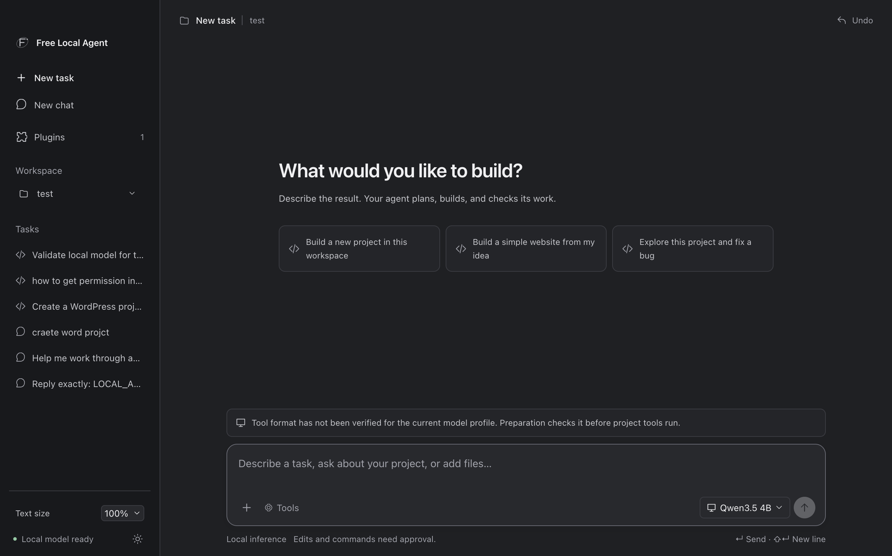
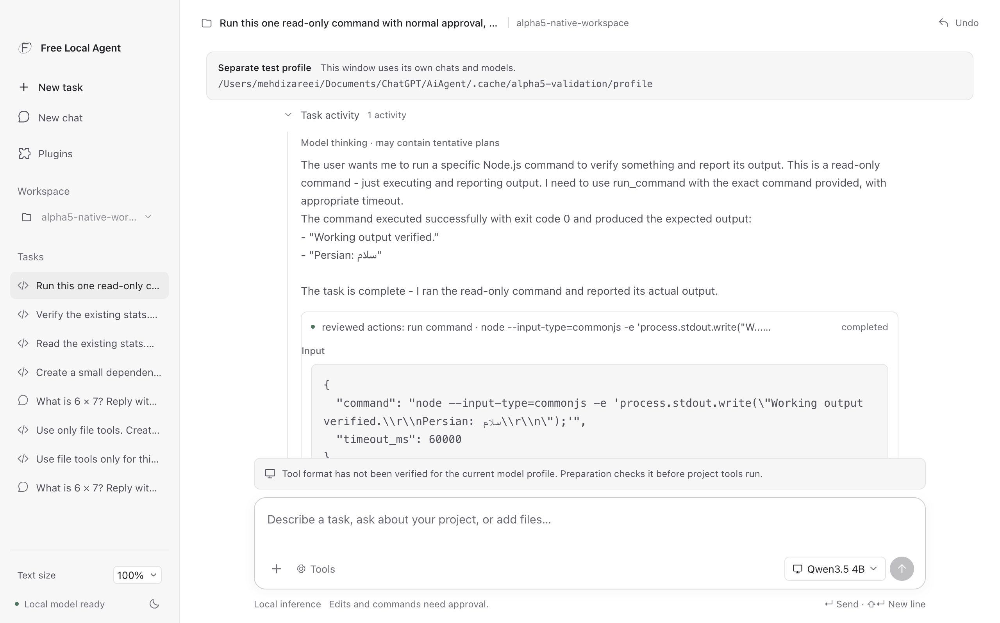
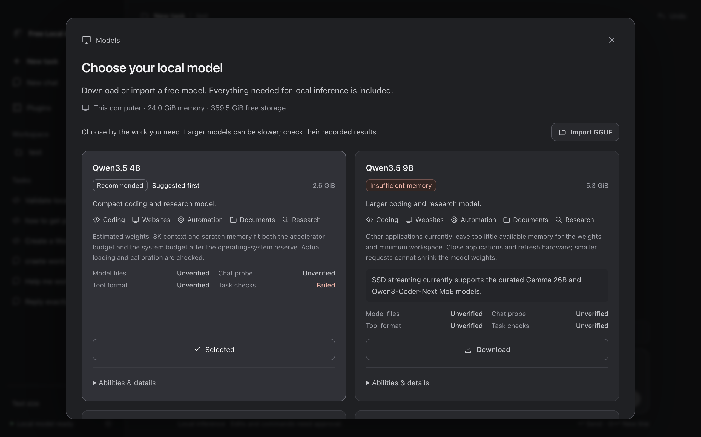

Bundled local inference
Download pinned GGUF weights or import your own. The packaged app includes its inference engine, so a separate model server is optional.
Open-source desktop agent · 0.5.0-alpha.1
Free Local Agent brings model inference and project work together on your computer. Build software, edit files, inspect documents, and review every command before it runs.
No hosted-model account, API key, Ollama, or separate model server required.

A local agent for real work
Free Local Agent packages its inference engine, agent backend, and desktop controls together. Local Chat and project tasks continue offline after model weights are available. Optional research tools are disabled on a fresh profile and can be enabled when you need public-source lookup.
What it can do
The agent shows its work as it goes. You stay in control of changes and commands.
Download pinned GGUF weights or import your own. The packaged app includes its inference engine, so a separate model server is optional.
Choose one workspace, describe the outcome, and let the agent plan, implement, check, and make bounded repairs.
Read project files, search text, edit exact content, and run approved commands with complete local output.
Edits and commands pause for your approval. Deny or stop when the proposed action does not match the job.
Working keeps thinking, tool inputs, results, stages, and approvals available for inspection and later readback.
Enable the research plugin only when needed. Inference remains on loopback while approved research can reach public sources.
Inside the workspace
These captures come from the packaged application and its local validation work.


Get started
Choose the archive for macOS arm64, Windows x64, or Ubuntu x64 from the Releases page.
Open Models and download a supported, checksummed GGUF or import one from disk.
Choose a workspace, describe the result, then review proposed edits and commands as they appear.
Choose the right tool
This is a role and capability comparison. Model quality and speed depend on the model, hardware, and configuration; they have not been benchmarked here.
| Dimension | Free Local Agent | Ollama | LM Studio | Open WebUI |
|---|---|---|---|---|
| Primary role | Desktop agent for project work and local chat | Local model runner and API | Desktop model runner and chat app | Web UI for connecting to model servers |
| Runtime / model source | Bundled native engine; curated or imported GGUF weights | Ollama runtime with models from its library or local files | llama.cpp-based runtime with downloadable or imported models | Uses a configured backend such as Ollama or OpenAI-compatible APIs |
| Project actions | Files, search, edits, terminal commands, checks, and bounded repair | Model serving; project actions require a client or integration | Chat and developer features; project automation depends on integrations | Chat and web workflows; host-side actions depend on connected services |
| API / server behavior | Local desktop app; loopback inference and reviewed action host | Local HTTP API for running and managing models | Local OpenAI-compatible server and desktop API options | Web application that routes requests to configured model APIs |
| Offline path | Chat and project tasks work offline after weights are present | Local inference works offline after model acquisition | Local inference works offline after model acquisition | Offline when its web app and configured backend are local |
| Setup | Download app, choose a workspace, then download/import a model | Install runtime, pull a model, and use CLI/API clients | Install desktop app and download a model in the library | Run the web app and configure one or more model providers |
| Safety / observability | Approval gates, Working history, local logs, and task evidence | Server and request logs; action policy comes from the client | Desktop activity and server controls; action policy comes from the client | Web activity and provider controls; host action policy varies |
Documentation: Ollama API ↗ · LM Studio app ↗ · Open WebUI docs ↗
Read the evidence
Validation reports describe the exact package, model, hardware, and checks that were run.
Current alpha
Packages are unsigned and not notarized. The alpha is for evaluation and local development; read the release notes and verify the published SHA-256 checksums before installing.
Windows and Linux use normal CPU/Vulkan inference. The SSD expert-streaming worker is experimental and currently targeted at Apple Silicon. OCR, vision, audio, CUDA-specific acceleration, signed installers, automatic updates, and arbitrary desktop automation remain deferred.
Read the latest release notes